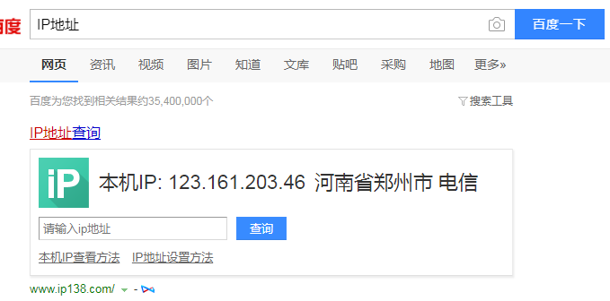
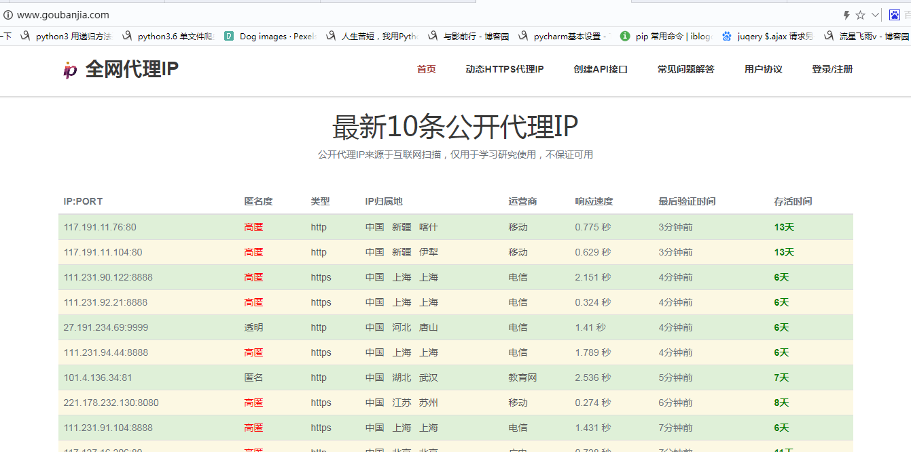
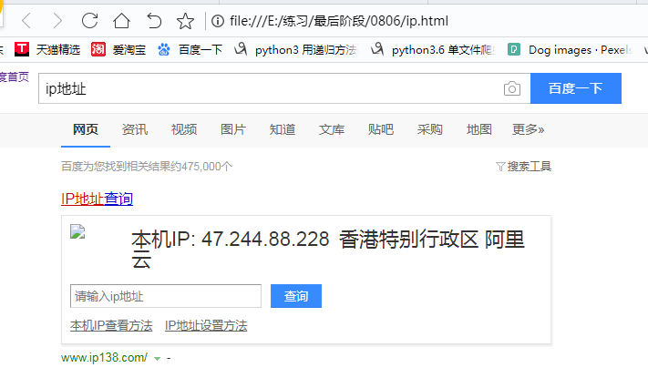

设置ip代理是爬虫必不可少的技巧；
查看本机ip地址；打开百度，输入“ip地址”，可以看到本机的IP地址；

本文使用的是goubanjia.com里面的免费ip；

使用时注意要注意传输协议是http还是https，代码如下；
# 用到的库
import requests
# 写入获取到的ip地址到proxy
proxy = {
'https':'221.178.232.130:8080'
}
# 用百度检测ip代理是否成功
url = 'https://www.baidu.com/s?'
# 请求网页传的参数
params={
'wd':'ip地址'
}
# 请求头
headers = {
'User-Agent': 'Mozilla/5.0 (Windows NT 6.1; WOW64) AppleWebKit/537.36 (KHTML, like Gecko) Chrome/65.0.3325.181 Safari/537.36'
}
# 发送get请求
response = requests.get(url=url,headers=headers,params=params,proxies=proxy)
# 获取返回页面保存到本地，便于查看
with open('ip.html','w',encoding='utf-8') as f:
f.write(response.text)打开存入的“ip.html”查看内容如下；

done.